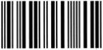

001床
张爱琴
54岁
医保

首次护理记录单（内外科版）
评估人:
张小扩
评估日期:
2018-04-30- 12:00:23
姓名:
张爱琴
性别:
女
年龄:
53岁
科室:
神经内科
住院号:
38411
创号:
001
入院:
20180101
职业:
教师
民族/宗教:
汉/无
教育程度:
文盲
小学
中学
中专
大专以上
资料来源:
患者
家属
朋友
其他
日常照顾者:
自我照顾
夫/妻
父母
子女
亲戚
朋友
保姆
其他
入院诊断:
1. 椎基底动脉供血不足。2. 颈椎病？
入院方式:
步行
扶行
轮椅
平车
过敏史:
无
有
(过敏源:
食物
种类：
食物
其他
)
不明确
医疗费用支付方式:
自费
公费医疗
医保
社保
商业保险
他人赔付
保姆
其他
一、护理评估
意识状态:
呼之:
能应
不应
对答:
切题
不切题
无法评估
视力:
正常
模糊
失明
无法评估
饮食:
自行进食
辅助进食
经鼻胃管
肠胃造瘘管
咀嚼困难:
无
有
无法评估
口腔黏膜:
完整
溃疡
白斑
红肿
其他
吞咽困难:
无
有
无法评估
睡眠:
正常
难入睡
易醒
早醒
多梦
辅助药物
醒后疲劳感:
无
有
无法评估
排尿:
正常
尿频
尿急
尿痛
尿失禁
尿潴留
留置尿管
其他
排便:
正常
次/天 （1次
天）
便秘
腹泻
失禁
其他
四肢活动:
自如
无力
截瘫
全瘫
无法评估
偏瘫
(
左上肢
左下肢
右上肢
右下肢)
跌倒风险评估:
分
基本生活活动能力评估:
分